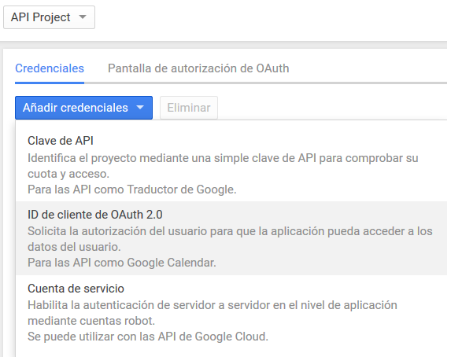
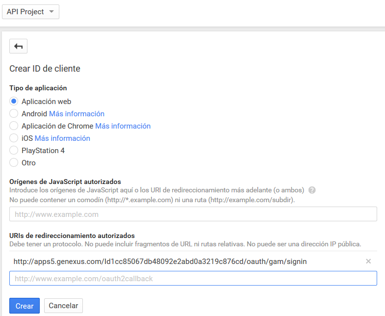
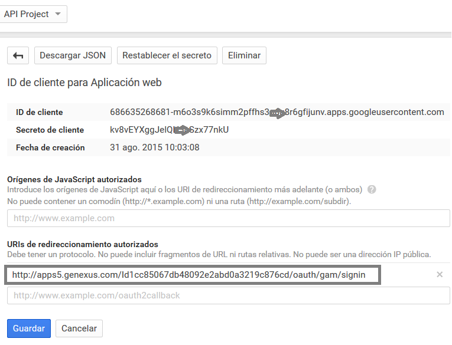
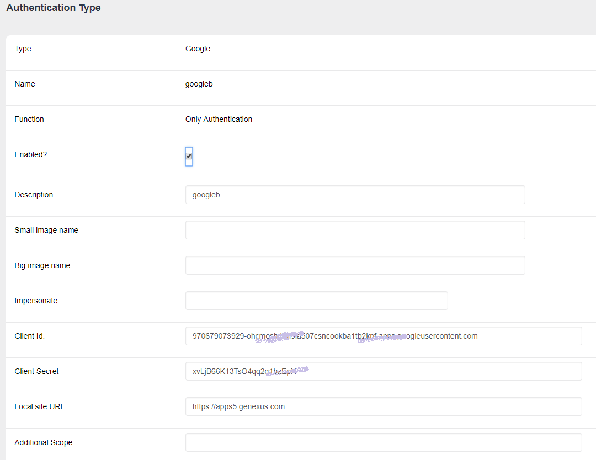

GAM - Google Authentication Type
Using GeneXus Access Manager you can authenticate in Google site, just by following these steps.
- Setup
- Configuration to be done in the GAM Backend
- Google Login
- How to login using Google account in Web applications
- How to login using Google account in SD applications
- See Also
Setup
Create a Google app
1. You need to create a "Google client application" in Google site and obtain Client Id and Client Secret for that application.
Go to the following link: https://code.google.com/apis/console
2. There go to API Access section; first, click on the Credential section, and select "OAuth Client id":

Select "Application Type" = Web Application

Finally, you need to change the Redirect URIs. There you may specify the complete URI of your application, including the /oauth/gam/signin, as the figure shows:

Important note
 In all cases - Java and NET-, you need to specify the complete URI of the application including the virtual directory followed by /oauth/gam/signin
In all cases - Java and NET-, you need to specify the complete URI of the application including the virtual directory followed by /oauth/gam/signin
Configuration to be done in the GAM Backend
Define a new Authentication Type = Google using the GAM - Web Backoffice.
Enter Client Id and Client Secret obtained in Google site.

Important note
About the Local Site URL configuration in GAM backend. You just need to enter the domain of the server running the application.
It isn't necessary to enter the complete site URL, but in case you enter it, do not include the "/servlet" in java.
Google Login
How to login using Google account in Web applications
See the GAMExampleLogin object for details about how the login is executed.
How to login using Google account in SD applications
In the case of Smart Devices applications, you need to add an event in the login object to authenticate using Google.
The logic inside the event associated will include a call to a method of Actions external object, named "LoginExternal".
The first parameter is based on the GAMAuthenticationTypes domain, and its value should be "Google".
The &User and &password parameters are ignored in this case.
The &LoginExternalAdditionalParameters has an "AuthenticationTypeName" property where you can set the name of the Authentication Type. This is due to the fact that more than one Google Authentication Type can be defined in the Repository.
Event 'Google'
Composite
&LoginExternalAdditionalParameters.AuthenticationTypeName = !"Googleb"
GeneXus.SD.Actions.LoginExternal(GAMAuthenticationTypes.Google, &User, &Password, &LoginExternalAdditionalParameters)
Return
EndComposite
EndEvent
Another way to program the Google login, when you only have one Google Authentication Type in the repository, is the following (without passing the &LoginExternalAdditionalParameters):
Event 'Google'
Composite
GeneXus.SD.Actions.LoginExternal(GAMAuthenticationTypes.Google, &User, &Password)
Return
EndComposite
EndEvent
See GAM Login Method for details.
See Also
GAM - Facebook Authentication Type
GAM - Twitter Authentication Type
Additional Scope Property for GAM Google / Facebook Authentication Types